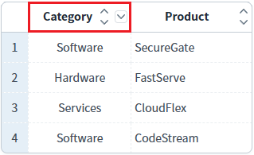
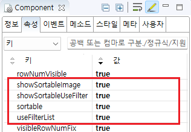
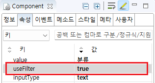

GridView의 컬럼에 정렬과 필터 기능이 모두 적용된 경우, GridView의 헤더에 정렬(sort) 아이콘와 필터(filter) 아이콘을 모두 표시한 예제입니다.
정렬 및 필터 아이콘 표시
1
실행된 결과를 확인합니다.
예제 영역 '정렬 및 필터 아이콘 모두 표시 활성화'에 있는 GridView의 'Category' 헤더 컬럼을 확인합니다.
정렬 아이콘과 필터 아이콘이 함께 표시됩니다.
Image 1.브라우저(Chrome) 실행 예시

1
STEP 1: GridView의 속성을 정의합니다.
[필수] showSortableUseFilter="true"
[default: false, true] useFilterList와 showSortableImage 속성을 동시에 사용할 때 정렬 아이콘(sortable)과 사용자 정의 필터 아이콘(useFilterList) 모두를 헤더에 표시.
[필수] showSortableImage="true"
[default: false, true] 정렬 가능한 컬럼의 헤더에 정렬 이미지를 출력.
[필수] useFilterList="true"
[default: false, true] 필터링 대상 값을 목록으로 표시.
[선택] sortable="true"
[default: false, true] gridView의 헤더 클릭을 통한 데이터 정렬 지원 여부. (컬럼 단위로도 설정이 가능.
Image 2.웹스퀘어 스튜디오의 Component View - 속성 설정 예시

2
STEP 2: GridView의 헤더 컬럼의 속성을 정의합니다.
필터 기능 및 정렬 기능을 사용할 컬럼의 속성을 설정합니다. (정렬 기능은 GridView의 sortable 속성을 true로 지정하면 모든 컬럼에 정렬 기능이 사용으로 설정됩니다.)
[필수] useFilter="true"
[default:false, true] 필터 사용 여부.
[선택] sortable="true"
[default: false, true] 헤더 컬럼에 데이터 정렬 기능을 설정. (GridView 전체에도 설정이 가능.)
Image 3.웹스퀘어 스튜디오의 Component View - 헤더 컬럼 속성 설정 예시

Example 1.Source
<!-- gridView 의 소스 본문 예시 --> <w2:gridView showSortableUseFilter="true" showSortableImage="true" useFilterList="true" sortable="true" dataList="data:dlt_exam_1"> <!-- 중략 --> <w2:header id="header1"> <w2:row id="row1"> <w2:column useFilter="true" value="분류" id="column2"></w2:column> <!-- 중략 --> </w2:row> </w2:header> <!-- 중략 --> </w2:gridView>
showSortableUseFilter
useFilterList
sortable
showSortableImage
[header column] sortable
[header column] useFilter